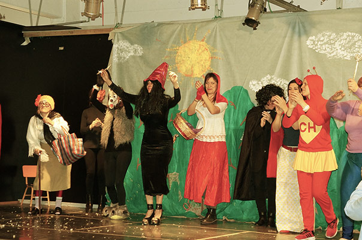
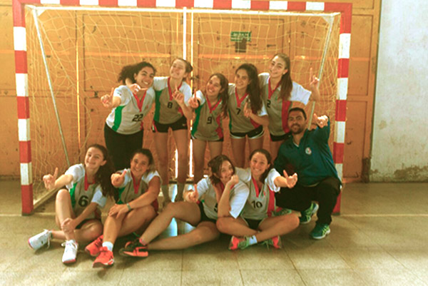
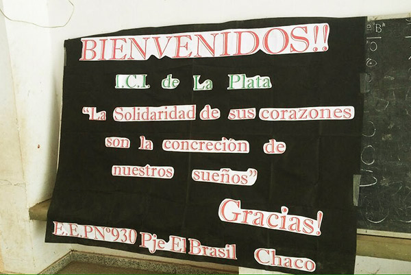
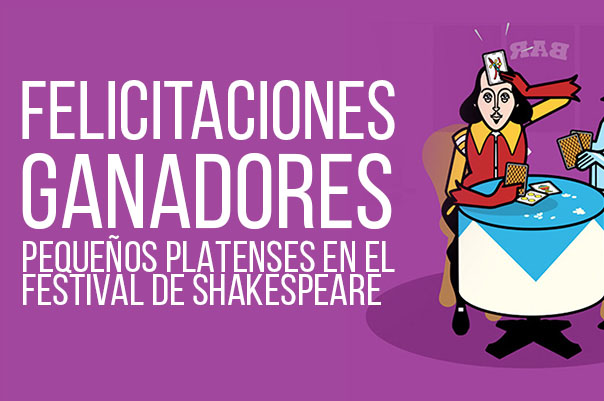

NUESTRAS ACTIVIDADES
Algunos de los proyectos realizados durante el 2015
HUERTA ORGÁNICA
Los chicos apreden, comen mejor y lo hacen con sus propias manos.
CAMPAMENTOS
Campamentos educativos realizados por los alumnos de 4º, 5º y 6º año del nivel primario.
SALIDAS EDUCATIVAS
Intercambio cultural organizado por el Instituto Británico y el Instituto de Cultura Itálica.
DIA DE LA MÚSICA
En conmemoración al día de la música, inundamos el colegio de clases con juegos musicales.
PROYECTO CHACO
Proyecto solidario llevado a cabo por los alumnos de 4º año del nivel secundario, en colaboración con todas las familias que forman parate de la institución.
CONI
Giochi della Gioventù. Juegos de la juventud Italiana.
ABIERTAS LAS INSCRIPCIONES
CICLO LECTIVO 2017
PRÓXIMOS ACTOS
Los esperamos para celebrar en familia

AGOSTO
Aniversario de la muerte de San Martín
AGOSTO 
Festejo del día del niño
SEPTIEMBRE
Día del Maestro
Nivel Inicial
14hs
El próximo viernes se realizara en el SUM de Nivel Inicial el acto por el día del maestro
Ver imágenesTORNEO CONI 2016
ESTAS LISTO
Novedades
Cartelera de actividades de la institución
SEP
Informe proyecto Chaco 2016
Proyecto chaco
Nivel Secundario
Informe realizado por canal América acerca del Proyecto Chaco llevado a cabo por alumnos de la escuela. El mismo consistió en un proyecto solidario llevado a cabo por los alumnos de 4º año del nivel secundario, en colaboración con todas las familias que forman parate de la institución.
Ver InformeSEP 
Avanzamos a la final en los Torneos BA!
Handball femenino
Nivel Secundario
El equipo de handball femenino categoría cadetes le ganó a rauch y clasificó a mar del plata a las finales provinciales de los Torneos BA. Las finales se jugarán Mar del Plata del 3 al 7 de octubre.
SEP 
Entrevista proyecto Chaco 2016
Proyecto chaco
Nivel Secundario
Entrevista realizada por canal América a alumnos de la escuela por el proyecto chaco. El mismo consiste en un proyecto solidario llevado a cabo por los alumnos de 4º año del nivel secundario, en colaboración con todas las familias que forman parate de la institución.
Ver EntrevistaAGO 
Festival Shakespeare en la Escuela
Concurso
Nivel Primario
Nuestro alumno Valentino Sánchez Guillén de 6ºB, está participando del Festival Shakespeare en la Escuela.
Ver Concurso